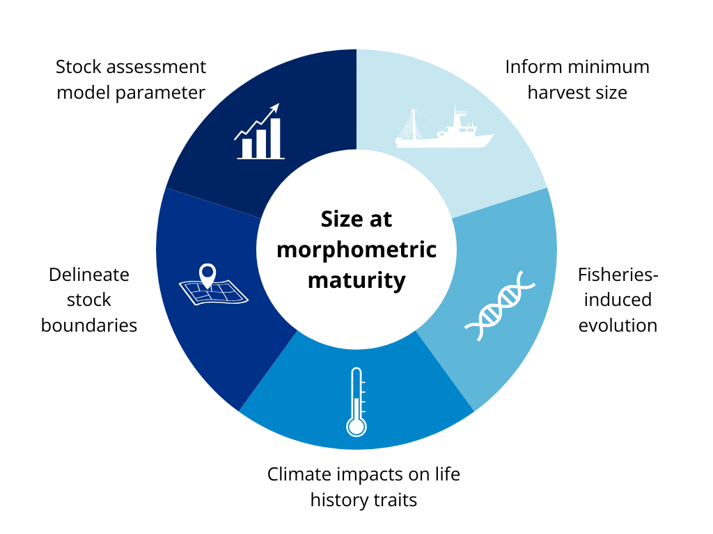

2 Importance of size at maturity for management
Globally, crustacean (shrimp, lobster, and crab) fisheries are growing faster than any other group of fisheries, and represent some of the highest-value seafood products on the market (Boenish et al. 2022). Accurate estimates of size at maturity are crucial for the sustainable management of these valuable fisheries.

2.1 Minimum harvest size
Size at maturity is a key consideration when setting minimum size regulations, as setting a minimum legal size below the size at 50% sexual maturity (SM50) can significantly restrict the reproductive potential of a population. When minimum size limits are set above SM50, high yield and spawning biomass can often be maintained even under high fishing pressure (Prince and Hordyk 2019).
2.2 Stock assessment & model inputs
Effective management of crustacean fisheries depends on stock assessments that estimate current biomass levels, evaluate the health of the stock compared to historical levels, and predict the effects of potential management actions. The difficulty of aging crustaceans means that size-structured models are typically preferred over age-based methods for stock assessment purposes (Punt, Huang, and Maunder 2013; Punt, Haddon, and McGarvey 2016). SM50 is a fundamental parameter in frequently used stock assessment models like Length-Based Spawning Potential Ratio (LBSPR), which are especially useful for data-limited fisheries (Prince and Hordyk 2019; Hordyk et al. 2015). Stock assessment models can be highly sensitive to shifts in size at maturity inputs like SM50, particularly when combined with changes in growth parameters such as molt probability and molt increment probability (Hodgdon et al. 2022). Understanding the effect that climate-driven shifts in life history input parameters like SM50 have on stock assessment model outputs is critical for future modeling efforts and fisheries management (Hodgdon et al. 2022).
Even when temporal variation in maturity does not have a dominant impact on assessment output, uncertainty in maturity estimates can be a significant contributor to overall uncertainty in biomass estimates (Miller, O’Brien, and Fratantoni 2018). This underscores the importance of morphometric maturity modeling approaches that provide reliable estimates of the uncertainty associated with the resulting SM50 values.
2.3 Accounting for spatial structure
2.4 Fishing effects on size at maturity
Monitoring changes in size at maturity is also an important tool to assess the impacts of environmental changes and fishing pressure on fish and invertebrate life-history characteristics (Audzijonyte, Kuparinen, and Fulton 2013; Lappalainen et al. 2016). For example, there is strong evidence that size-based fishery selection has led to declines in female SM50 for female American lobster (Homarus americanus) in the United States and Canada (Haarr et al. 2018; Waller et al. 2019, 2021; Le Bris et al. 2017).
2.5 Climate impacts
Shifts in ocean conditions have already led to shifts in the abundance and spatial distribution of important marine fisheries, with resulting impacts on their productivity (Cheung, Watson, and Pauly 2013; Nye et al. 2009). Consequently, understanding the effects of climate change on marine resources and identifying effective mitigation strategies are key priorities of the NOAA Fisheries National Climate Science Strategy.
Delaying revisions to harvest regulations in response to climate-related changes in population growth rates can increase the likelihood of a population collapse (Brown et al. 2012; Pershing et al. 2015). Conversely, dynamic biological reference points and responsive harvest control rules can increase the climate resilience of a fishery (Collie et al. 2021; Kritzer et al. 2019). Identifying and refining non-invasive, relatively inexpensive methods of monitoring size at maturity and other life history traits dictating reproductive potential will support the dynamic and adaptive fisheries management needed to offset the negative effects of climate change (Karp et al. 2019; Gaines et al. 2018; Holsman et al. 2019).
Knowledge of the direction and magnitude of climate-related shifts in size at maturity is essential for simulating the effects of alternative minimum size limits under various warming scenarios (Hunt et al. 2023).
NOAA Fisheries Climate Vulnerability Assessments identify which species may be most vulnerable based on their exposure to projected environmental changes and their ability to cope with those changes given their specific life history characteristics. Of the crustaceans included in the Northeast Fish and Shellfish Climate Vulnerability Assessment (American lobster, Cancer crabs, blue crab, northern shrimp, and deep-sea red crab), only deep-sea red crab did not score at least “moderate” on overall vulnerability, while all species scored “high” on the exposure component of the assessment (Hare et al. 2016).
Mullowney and Baker (Mullowney and Baker 2021) found that colder temperatures were a significant driver of decreases in snow crab size-at-morphometric-maturity in Newfoundland and Labrador. Conversely, an inverse relationship between size at maturity and temperature has been observed for the American lobster (Le Bris et al. 2017).
A better understanding of size at maturity will contribute to broader work to assess the effects of climate change on regional fisheries harvest scenarios (NOAA Fisheries 2024). My project will thus support federally mandated efforts to optimize and diversify sustainable seafood production and fishing opportunities while ensuring the long-term sustainability of fisheries through effective and efficient management.